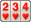
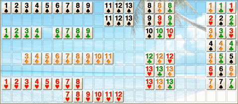

Romi lader dig spille Rummy Tile (RummyCube, Rummikub, Rami) mod computeren på 3 forskellige niveauer. Spillet spilles med to sæt á 52 brikker og med to jokere. To jokere er standardindstillingen Joker (Normal, Ingen, For alle eller Specialjokere (Twist)) under Indstillinger → Spil → Jokere. Formålet med dette spil er at danne grupper af 3 eller flere brikker, som enten indeholder på hinanden følgende brikker af samme farve eller brikker med samme talværdi men i forskellige farver. Hver gruppe skal indeholde mindst én rigtig brik: jokere alene, også specialjokere, danner ingen gruppe.
Vil du først se, hvordan der spilles? Tryk på knappen Demo øverst til højre for at se Romi spille mod Romi. Tryk på demobanneret når som helst for at stoppe og vende tilbage til dit eget spil.
Når du starter et nyt spil, trækkes 14 brikker tilfældigt til Romi og 14 til spilleren. Sidstnævnte placeres på hylden i rækkefølge.
Spilleren åbner sit spil ved at spille mindst én gruppe på 3 brikker eller flere, kun ved hjælp af brikkerne på sin hylde. Summen af disse brikkers værdier skal være (25, 30 eller 50) eller mere — eller en hvilken som helst gruppe med åbningen Intet minimum.
Efter at spilleren har åbnet spillet, kan han bruge brikkerne på bordet til at fuldføre grupper med brikker fra sin hylde. Spilleren kan flytte eller omorganisere alle brikker på bordet, men de nye grupper skal være gyldige og bestå af 3 brikker eller flere.
Romis vindue er opdelt i to hovedelementer: bordet med 8 rækker á 23 celler (én kolonne mere med Romi-reglen 12–13–1), hvor du placerer de brikker, du spiller, og hylden, hvor spillerens brikker opbevares. Grupperne af brikker, der placeres på bordet, skal være adskilt af en eller flere tomme celler. Spillerens brikker kan placeres hvor som helst på hylden.
Romi tillader ikke, at du placerer en brik før eller efter en brik på bordet, hvis gruppen dannet med denne brik ikke er gyldig.
Hvis du ikke kan eller ikke vil spille en brik, skal du trække en ved at klikke på -ikonet.
Når du er færdig med din tur, klikker du på timeglaset . Romi kontrollerer, at spillet er gyldigt, og Romi spiller sin tur. Når Romi spiller, erstattes timeglasset af et computerikon.
Bemærk venligst, at du ikke kan flytte brikker (som ikke er dine) på bordet, før du åbner spillet med dine egne grupper af brikker på (25, 30 eller 50) point eller mere (eller en hvilken som helst gruppe med åbningen Intet minimum).
For at placere en brik på bordet kan du klikke på brikken, og den flyttes automatisk til bordet. Hvis du vil placere en følge af brikker, klikker du på hver brik i rækkefølge for at danne følgen. Du kan også placere en gruppe brikker (med identiske numre) ved at klikke på hver brik i gruppen.
Du kan også vælge en brik og flytte den manuelt til den ønskede destination. Hvis du flytter en brik over en følge på 5 brikker eller flere (som indeholder samme brik), deles følgen i to følger.
Du kan gendanne bordet, som det var, før du begyndte at spille din tur, ved at klikke på timeglasset, og du får mulighed for at gendanne bordet. Når nogle af dine grupper er ugyldige, vælger du mellem Gendan (bordet, som det var ved starten af din tur), Rediger (spil videre) og, når der er noget at tage tilbage, Tag ugyldige tilbage (de kort, du har lagt fra holderen i denne tur, og som ligger i en ugyldig gruppe, kommer tilbage på holderen; det, der stadig er ugyldigt, forbliver fremhævet).
Du kan se dine Romi-point og/eller nulstille dine point ved at klikke på -knappen og vælge Statistik.
Du kan tilføje en brik til slutningen eller begyndelsen af en gruppe brikker ved at trække brikken til henholdsvis den første eller sidste brik i gruppen. Hvis pladsen før eller efter gruppen ikke er tilstrækkelig, flytter Romi den nye gruppe af brikker derhen, hvor der er plads nok.
Romi giver dig også mulighed for at lave to grupper af brikker med én gruppe på 5 brikker eller flere og en anden brik, som er identisk med en i denne gruppe. De to nye grupper skal hver bestå af 3 brikker eller flere. For eksempel, hvis der er en gruppe brikker som (4,5,6,7,8,9), og hvis du har en anden 6, kan du lave følgende to grupper (4,5,6) og (6,7,8,9). Genvejen fungerer ved at vælge din 6 og trække den på en hvilken som helst brik i gruppen (4,5,6,7,8,9).
Hvis en joker ligger i en gruppe på bordet, trækker du det kort, den står for, oven på den: kortet tager dens plads, og jokeren kommer tilbage på din hånd. Du skal have åbnet, og den joker, du tog tilbage, skal spilles, før du afslutter din tur.
En enkelt enhed kan bruges af flere menneskelige spillere ved at give enheden videre til den næste spiller, når de har afsluttet deres tur.
På skærmen Indstillinger → Spillere skal du blot fjerne markeringen i afkrydsningsfelterne ved siden af navnet på den spiller, der skal spilles af et menneske.
Et ændret afkrydsningsfelt træder i kraft, når det næste spil starter.
Træk en brik: Trækker en tilfældig brik og lader Romi spille sin tur.
Sorter efter farve:

Omarrangerer spillerens brikker på hylden efter farve.Indstillinger: Giver dig mulighed for at ændre og gemme dine indstillinger for Romi.
Spillede brikker: Viser dig de brikker, Romi spillede i sin sidste tur, eller de brikker, du spillede i din tur.
Valider: Kontrollerer, at grupperne af brikker spillet på bordet er gyldige. Den fortæller dig også, hvad der ville forhindre din tur i at slutte: en joker, du tog tilbage, som stadig er på din hylde; med Frosne jokere en joker fra bordet, der ikke længere står for det samme kort; med Vent en tur efter åbning brikker lagt til andre grupper i den tur, hvor du åbner. I et multiplayerspil, som en anden er vært for, kontrolleres kun grupperne: værtens enhed afgør, om din tur kan slutte.
Information: Du kan se dokumentationen for Romi, se din statistik eller starte et nyt spil.
Ryd bordet: Omarrangerer brikkerne på bordet i en særlig rækkefølge som vist nedenfor:

Under Indstillinger → Layout → Knapper kan du skjule de knapper, du aldrig bruger. Træk en brik er den eneste, der aldrig kan skjules.
Skjuler du Ryd bordet , Valider eller Spillede brikker , forsvinder knappen helt enkelt.
Sorter efter farve og Indstillinger opfører sig anderledes: deres felt fjernes aldrig, det bliver permanent Gentag og Fortryd, gråtonet når der intet er at gentage eller fortryde. Indstillingerne nås fortsat via menuen .
Selv når begge knapper vises, bliver sorteringsknappen Gentag, så snart du har fortrudt noget, og indstillingsknappen bliver Fortryd, så snart der er et træk at tage tilbage.
Spilniveau: Under Indstillinger → Spil vælger du Begynder, Mellem eller Ekspert. Niveauet afgør, hvor snedigt Romi danner sine grupper, stjæler brikker fra bordet og genopbygger de grupper, den bryder op.
Romi-regel: Standard eller 12–13–1. Med 12–13–1 må et es også følge kongen i slutningen af en række (for eksempel 11-12-13-1), og bordet får én kolonne mere. Rækken slutter der: ingen 2'er efter det es.
Joker: Normal (to jokere i kortsættet), Ingen (ingen jokere) eller For alle (ingen i kortsættet, men hver spiller starter med én på hånden). En joker, der stadig er på hånden, når spillet slutter, tæller 30 point imod dig.
Specialjokere (Twist): Et fjerde valg under Joker: jokerne fra Normal samt én Dobbeltjoker, én Farveskiftjoker og én Spejljoker pr. kortsæt, som i Rummikub with a Twist. Dobbeltjokeren kan tages tilbage fra bordet, som en joker: træk et af de kort, den står for, oven på den; har gruppen brug for begge, følger det andet med fra din hånd. En Farveskiftjoker for enden af en række kan også tages tilbage, med det kort i rækkens farve, som den står for. Spejljokeren bliver på bordet. En specialjoker, der er tilbage på hånden ved spillets slutning, tæller som en joker. I et netværksspil skal alle spillere have den nyeste version af Romi.
Frosne jokere (spillere): Slået fra som standard: når du har åbnet, må du flytte en joker, der allerede ligger på bordet, til en anden gruppe, så længe alle grupper er gyldige, når din tur slutter. Når den er slået til, kan en joker, der lå på bordet, da din tur begyndte, kun tages tilbage med det kort, den står for. Indtil da står den fortsat for det samme kort, i en gruppe på mindst 3 kort, og flytter kun med hele sin gruppe. Kortet, der tager den tilbage, bliver derefter på bordet resten af din tur. Det samme gælder Dobbeltjokeren og en Farveskiftjoker for enden af en række; Spejljokeren forlader aldrig bordet, og dens gruppe beholder sin form: en række forbliver i samme farve, en gruppe af ét tal beholder det tal. Indstillingen Frosne jokere (Romi) gør det samme for Romi (slået til som standard), undtagen i et netværksspil, hvor Romi følger spillernes indstilling. I et netværksspil skal alle spillere have den nyeste version af Romi.
Åbning: De point, der kræves for at åbne: 25, 30, 50 eller Intet minimum (enhver gruppe på mindst 3 brikker fra hylden åbner).
Vent en tur efter åbning: I den tur, hvor du åbner, må du kun lægge grupper fra din egen hylde; brikkerne på bordet (og at lægge til andre grupper) kan bruges fra din næste tur. Computerspillerne følger samme regel.
Tidsgrænse og straf: Fra 0 (ingen grænse) til 5 minutter pr. tur. Når tiden løber ud med kontakten Tidsgrænsestraf slået til, vender bordet tilbage til, som det så ud ved starten af din tur. I et solospil sker det også, når flere menneskelige spillere deler enheden, men aldrig på niveauet Begynder. I et solospil trækker du så desuden én brik, eller to på niveauet Ekspert.
Vinderen starter: Når den er slået til, spiller vinderen af forrige spil først i det næste.
Romi stjæler også: Ligesom dig må Romi tage brikker fra grupperne på bordet og genopbygge dem, så længe hver gruppe stadig er gyldig ved slutningen af dens tur.
Panel til venstre: Under Indstillinger → Layout flytter denne kontakt sidepanelet til venstre på skærmen i stedet for til højre. Portræt og landskab har hver sin kontakt.
Tabletlayout: I landskab fylder bordet hele bredden, og holderen, knapperne og panelet står i en række nedenunder. Slået til som standard på tablets.
Tilpas brikker: Under Indstillinger → Udseende vælger du en færdig palet (Standard, Farveblind, Høj kontrast, Monokrom, eller Nat for mørke brikker med lyse kulører) eller Tilpasset. Tryk på en brik i forhåndsvisningen; Farve og Symbol ændrer så den kulør. Jokeren har sin egen farve, som ændres med Farve. Baggrund vælger farven på selve brikfladen (farver, der ikke ville forblive læsbare på den, afvises). Knapperne virker på alle paletter: på en færdig palet opretter din første ændring en Tilpasset kopi af den, og du bliver spurgt først, hvis det ville erstatte tilpassede brikker, du allerede har gemt. Med Monokrom ændrer Farve på en kulør den ene farve, som alle kulører deler. Hvert symbol kan kun bruges af én kulør, så to kulører kan aldrig se ens ud på bordet. Talskrifttype vælger skrifttypen til kortenes tal blandt dem, der allerede findes på din enhed, uanset palet.
Bordets baggrund: Også under Indstillinger → Udseende. Ved siden af de fire nummererede baggrunde åbner valget Farve en farveprøve, hvor du vælger den baggrundsfarve, du vil have. Valget Foto lader dig i stedet bruge et af dine egne billeder: det kopieres ind i appen, vises under et let slør af den valgte farve og bliver kun på denne enhed.
Udfyld med Romi-spillere: Når du er vært for et onlinespil, spilles de pladser, ingen har taget, af computeren ved starten: et bord med 3 eller 4 pladser kan dermed spilles af 2 personer. Der skal være mindst to menneskelige spillere.
Forlader en spiller spillet uden at komme tilbage, går bordet ikke længere i stå på hans tur: når hans frist for at komme tilbage er udløbet, eller med det samme hvis han forlod spillet i stedet for at miste forbindelsen, spilles hans to næste ture som et almindeligt træk, og derefter overtager computeren pladsen. Kommer han tilbage i løbet af de to ture, beholder han pladsen; kommer han senere, får han den tilbage fra computeren.
Romi-versioner til Mac OSX, iOS og Windows er også tilgængelige på Romis webside: https://romi.ca